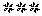

47. DIFFERENTIATED FEEDBACK *
The seminar is not necessarily over after the exam. The Participants can also learn from the mistakes they made in the exam. A well designed exam can show the participants where they have weak points and what they understood well.
Therefore, try to give every participant a differentiated feedback after the exam. Give hints on how he can learn his weak points. To motivate the participants to be interested in the mistakes they made in the exam, be sure to promote the exam as a way to learn even more, not just as a way to get a mark.
There are different ways to give exam feedback:
Do not just tell them their mark, but also return them the complete exam together with a correct solution, so that they can compare them.
If it is not possible to return the complete exam, write down a list of their weak points and pass it to them.
You can also offer the participants a chance to talk with you about the exam. This is especially important for weaker candidates.
Checkpoint: Seminar is over
The seminar is over and it is time to look back.